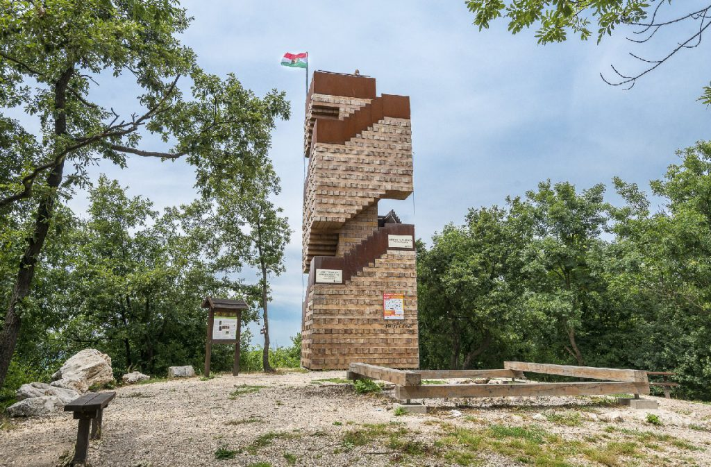
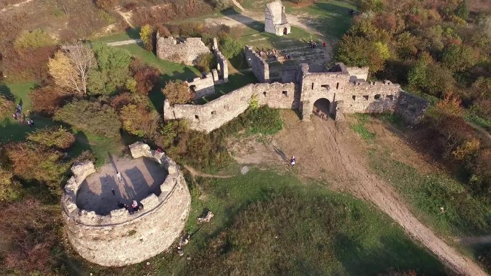
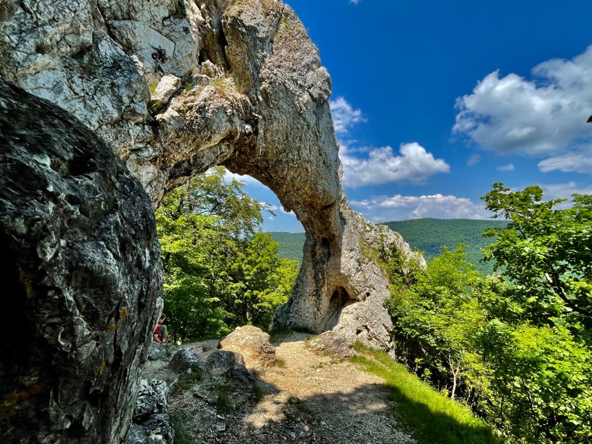

A Dévényi Antal-kilátó és meseszép látképe

A 447 méter magas Nagy-Kopasz-hegy tetején, Piliscsaba határában találhatunk rá a Dévényi Antal-kilátóra, amely már messziről, a fák mögül kikacsintva mutatja nekünk az utat. Nem véletlen, ha első látásra ismerős a formája, hiszen a népszerű Jenga játék mintájára álmodták meg. A 11,5 méter magas kilátó tetején tekintetünk egy majdnem 17 négyzetméternyi területű szintről pásztázhatja végig a festői Budai-hegység és a Pilis hegyvonulatai által alkotott panorámát. Lent pedig tűzrakóhelyek, padok, asztalok várnak minket, ahonnan kétféle körtúrára is továbbindulhatunk.
Egri vár másolata

Pilisborosjenőn, a Nagy-Kevély sasbérc dél-nyugati lejtőjén magasodik az egri vár másolata. A kőépületet az 1960-as években építették az Egri csillagok forgatásához. Habár néha forgatnak itt filmeket (pl. a Witcher, vagy a Magyar Vándor), állapota folyamatosan romlik. Ez sem tartja vissza a turistákat, hogy akár a Teve sziklával egybekötve megcsodálják. A várromok között megcsodálhatjátok a főkaput a tornyával, valamint kisebb kapukat, lőrésekkel tűzdelt falakat, egy rodellát és különböző fa tornyokat is. Pilisborosjenő Szent Vendel emlékművétől könnyű, 2 km-es túra vezet fel a várhoz. Jó hír, hogy az utat bringával is megtehetitek. S ha már arra jártok, érdemes egy rövid kitérővel meglátogatni a közeli Teve-sziklát is!
A lélegzetelállító Vaskapu-szikla

Az ámulatba ejtő sziklaformációt legegyszerűbben Pilisszántótól Klastrom felé tartva érhetjük el. Utunk a 800 éve alapított cisztercita templom és kolostor romjain, a Klastrom-forráson és az árvalányhajjal teli réten keresztül vezet a Vaskapu-szurdokvölgyhöz, ahonnan a meredeken felkapaszkodva a Vaskapu-sziklánál lyukadhatunk ki. A 6 és 15 méter magas, lenyűgöző sziklakapuk valószínűleg hévizes eredetű barlang maradványai lehetnek. Ide felérve, a Dobogókőre és a Két-bükkfa-nyeregre táruló kilátás azonnal elfeledteti velünk a megtett kilométerek fáradalmait.